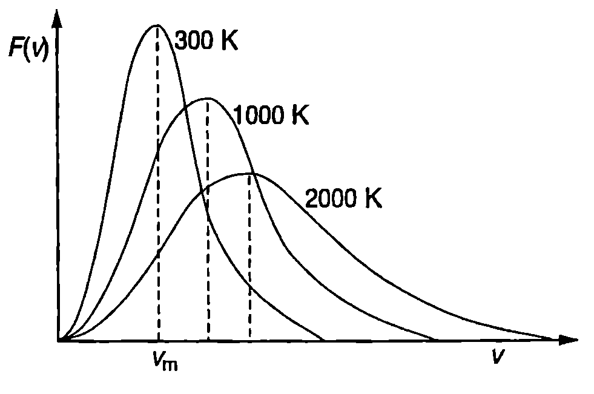

Функция на разпределение
В \ref{sec:32} въведохме величината средна квадратична скорост на молекулите, която е една от макроскопичните характеристики на топлинното движение. В резултат на ударите индивидуалните скорости на молекулите непрекъснато се променят едни молекули се ускоряват, а други се забавят. Също така бързо се изменя посоката на движение и взаимното разположение на молекулите. Поради огромния брой на молекулите, не е възможно да се проследи индивидуалното движение на всяка от тях. Не е възможно това да се направи дори само за една молекула. Затова задачата на молекулно-кинетичната теория е да установи средното разпределение на молекулите по скорости и в пространството.
По принцип са възможни най-различни разпределения на молекулите. Ето три примера:
-
Всички молекули се движат в една и съща посока с еднакви скорости.
-
Всички скорости са еднакви по големина, но имат различни посоки.
-
Молекулите от едни области имат по-големи скорости, а от други области - по-малки скорости.
Статистическата теория доказва, че между всички възможни разпределения съществува едно, чиято вероятност е несъизмеримо по-голяма от вероятността за всички други видове разпределения, поради което единствено то се реализира на практика. Това е разпределението, което съответства на състоянието на термодинамично равновесие. При отсъствие на външни силови полета равновесното, “абсолютно хаотично” разпределение на молекулите на идеален газ има следните характеристики:
-
Не се изменя с течение на времето.
-
Във всички равни по големина макроскопични обеми от газа се намират средно еднакъв брой молекули, т.е. концентрацията на молекулите навсякъде е еднаква.
-
Във всички макроскопични обеми от газа разпределението на молекулите по скорости е еднакво. Например, ако в да ден обем има молекули, които се движат със скорост , то в произволна друга област от пространството, заета от газа, която има същия обем средно същият брой молекули се движат със същата скорост .
-
Всички посоки на движение са равновероятни. Това означава, че във всеки макроскопичен обем на газа средният брой на молекулите с дадена (произволно избрана) скорост е равен на средния брой на молекулите със същата по големина, но противоположна по посока скорост .
През 1859 г. британският физик Джеймс Кларк Максуел (1831-1879) доказва, че за идеален газ, подчиняващ се на законите на класическата механика, в равновесно състояние, т.е. когато се изпълняват условия 1-4, средният брой на молекулите, чиято големина на скоростта лежи в интервала от и до , е
където е общият брой на молекулите, a е функцията на разпределение на молекулите по големина на скоростта. За функцията Максуел получава израза
където е Болцмановата константа, масата на една молекула, а — абсолютната температура. Формула \eqref{eq:34.2} изразява закона на Максуел за разпределение на молекулите по скорости. Произведението дава вероятността големината на скоростта на една молекула да попада в интервала от до . Графиката на функцията е представена на Фиг. \ref{fig:34.1}. За да се определи графично каква част от молекулите имат скорости в интервала , трябва да се измери площта на сивия трапец от Фиг. \ref{fig:34.1} и да се раздели на площта на фигурата, заключена между графиката на функцията и абсцисната ос .
От графиката се вижда, че:
-
При , . Отначало функцията нараства с увеличаване големината на скоростта , преминава през максимум, след това намалява и клони към нула при големи стойности на скоростта .
-
Скоростта , при която фукцията на разпределение на молекулите по големина на скоростта има максимум, се нарича най-вероятна скорост. Това е скоростта, която се среща по-често от всички останали скорости на молекулите.
-
Само незначителна част от молекулите имат скорости, които са много по-малки или много по-големи от най-вероятната скорост .
-
Голяма част от молекулите имат скорости, които са близки до най-вероятната скорост. Затова в много задачи с приближение може да се приеме, че всички молекули се движат с една и съща скорост.
Пример 34.1
Пресметнете най-вероятната скорост на молекулите на кислорода (O) при температура К. Моларната маса на кислорода е kg/mol. \end{psexample}
Решение
Най-вероятната скорост се определя от закона на Максуел за разпределение на молекулите по скорости. Намираме първата производна на функцията \eqref{eq:34.2} и я приравняваме на нула откъдето получаваме, че функцията F(v) има екстремум (максимум) при
Умножаваме числителя и знаменателя на дясната страна на равенство \eqref{eq:34.3} по числото на Авогадро и получаваме
където сме отчели, че и . Формули \eqref{eq:34.3} и \eqref{eq:34.4} показват, че най-вероятната скорост е правопропорционална на квадратен корен от абсолютната температура и е обратнопропорционална на квадратен корен от масата на молекулите (моларната маса на газа).
Търсената стойност на най-вероятната скорост е
Зависимост на F(V) от температурата
Максуеловото разпределение на молекулите по скорости зависи от температурата . На Фиг. \ref{fig:34.2} е показана графиката на функцията на Максуел при три различни температури. Вижда се, че при повишаване на температурата максимумът на кривите се отмества към по-големите скорости — нараства най-вероятната скорост, което съответства на факта, че при нагряване на газа молекулите се движат с по-големи скорости. Освен това при по-високи температури височината на максимума намалява и кривите стават по-широки, т.е. разпределението на молекулите по скорости става по-равномерно.

Функция на разпределение на молекулите по големината на скоростта (v).
`Фиг. 34.1`

`Фиг. 34.2`
Средни скорости
Средната аритметична скорост на молекулите се определя като се сумират големините на скоростите на всички молекули и получената сума се раздели на общия брой на молекулите. Тъй като броят на молекулите е много голям, разпределението им по скорости се задава с непрекъснатата функция , а сумирането се заменя с интегриране. Тогава по определение средна аритметична скорост се нарича величината
където е броят на молекулите с големина на скоростта в интервала от и до , a е сумата от модулите на скоростите на тези б молекули. След заместване на функцията от уравнение \eqref{eq:34.2} в \eqref{eq:34.5} и интегриране по части, за средната аритметична скорост на молекулите се получава (вж. пример 34.2):
И така, хаотичното топлинно движение на молекулите на идеалния газ се характеризира с три макроскопични величини: средна аритметична скорост , средна квадратична скорост и най-вероятна скорост . Трите скорости се различават помежду си само с числен множител от порядъка на единица.
При решаването на задачи често се прилагат опростени модели, в които се приема, че всички молекули на идеалния газ имат еднакви по големина скорости на хаотично топлинно движение. При тези приближени пресмятания за характеризиране на газа може да се използва всяка една от горните три скорости.
\begin{psexample}[label=ex:34.2]{*}{} Да се получи формула \eqref{eq:34.6} за средната аритметична скорост на молекулите на идеален газ. \end{psexample}
Решение
От уравнение \eqref{eq:34.2} заместваме функцията на разпределение на молекулите по големина на скоростта F(v) във формула \eqref{eq:34.5}, чрез която се дефинира величината средна аритметична скорост: Вкарваме експонентата под знака на диференциала и интегрираме по части
&\int_0^\infty v^3 \exp{-\frac{mv^2}{2kT}} dv =\\ &= -\int_0^\infty (\frac{2kT}{2mv}) v^3 d(\exp{(-\frac{mv^2}{2kT})}) =\\ &= -(\frac{kT}{m}) v^2 \exp{(-\frac{mv^2}{2kT})} \bigr|_0^\infty + \frac{kT}{m} \int_0^\infty \exp{(-\frac{mv^2}{2kT})} dv^2 =\\ &0 + 2 (\frac{kT}{m})^2 \int_0^\infty \exp{(-\frac{mv^2}{2kT})} d(\frac{mv^2}{2kT}) = 2(\frac{kT}{m})^2 \end{aligned}$$ Средната аритметична скорост е $$\bar v = 4\pi \left(\frac{m}{2\pi kT}\right)^{\frac{3}{2}} 2\left(-\frac{kT}{m}\right)^2 = \sqrt{\frac{8kT}{\pi m}}.$$ **Експериментална проверка на закона на Максуел**  ``` Експериментална проверка на закона за разпределение на молекулите на идеалния газ по големина на скоростта. ``` `Фиг. 34.3` На Фиг. \ref{fig:34.3} схематично е показана една от опитните постановки, с който се изследва разпределението на молекулите по скорости. В нагрята пещ се поставя метал с ниска температура на топене. Нейният обем се запълва с пари на метала, които могат да се разглеждат като идеален газ. В стената на пещта е направен отвор, който е толкова малък, че практически не влияе на разпределението на молекулите по скорости, т.е. молекулите, които напускат пещта през отвора, имат същото разпределение по големина на скоростта, както молекулите вътре в пещта. След това молекулите преминават през две диафрагми $D_1$ и $D_2$, които формират тесен молекулен сноп. През тесен отвор $D_3$ снопът влиза в цилиндър с диаметър $d$, въртящ се с ъглова скорост $\omega$. Към вътрешната стена на цилиндъра е прикрепена огъната в дъга стъклена пластинка. Цялата опитна постановка се намира във вакуумна камера, за да се предотвратят удари на молекули от снопа с молекулите на въздуха. Ако се движеха с безкрайно голяма скорост, молекулите щяха да попаднат в точка $A$ от пластинката (Фиг. \ref{fig:34.3}). Молекула, чиято скорост е $v$, пресича цилиндъра по неговия диаметър за време $t = d/v$. За същото време цилиндърът се завърта на ъгъл $\phi = \omega t = \omega d/v$ и молекулата ще попадне върху пластината на разстояние $\displaystyle s = \phi\frac{d}{2} = \frac{\omega d^2}{2v}$ от точка $A$. Колкото по-малка е скоростта на дадена молекула, толкова по-далеч от точка $A$ ще попадне тя. Така върху стъклената пластинка се отлага тънък метален слой, чиято дебелина е пропорционална на броя на молекулите, попаднали на даденото място. Ако се предположи, че разпределението на молекулите в снопа по скорости съответства на Максуеловото разпределение, лесно може да се пресметне зависимостта на дебелината на слоя от разстоянието $s$ и да се сравни с резултатите от експеримента. Изследванията, проведени с молекулни снопове от живак, кадмий, талий, бисмут и други метали показват, че разпределението на молекулите по големина на скоростта съответства на получената от Максуел по теоретичен път функция $F(v)$. **Барометрична формула** В отсъствие на външни силови полета налягането $p$ и средната концентрация $n_v = N/V$ на молекулите са еднакви в целия обем на газа. Картината обаче се променя, когато газът се постави във външно поле. Например въздухът в атмосферата се намира в полето на силата на тежестта и, както е известно, налягането намалява с височината $h$. За да пресметнем зависимостта $p(h)$, ще разгледаме земната атмосфера като идеален газ, намиращ се в състояние на термодинамично равновесие с определена температура $T$. Такъв модел на атмосферата се нарича изотермен. Нека на височина $h$ в изотермна атмосфера мислено да отделим малък цилиндричен обем от газа с лице на основата $S$ и височина $dh$ (Фиг. \ref{fig:34.4}). На отделения обем действа силата на тежестта $$mg = \rho Vg = \rho Sdhg,$$ където $\rho$ е плътността на въздуха, а $g$ -- земното ускорение. Освен това околният въздух действа на отделения обем със сили на нормален натиск. При механично равновесие силата на тежестта се уравновесява от силите на нормален натиск $$\rho gSdh = (p(h)-p(h+dh))S.$$ Съкращаваме $S$ и заместваме израза в скобите с $-dp$. (Изменението на налягането при увеличаване на височината с $dh$ e $dp = p(h+dh) - p(h)$.) Получаваме\rho gdh = -dp.
\frac{M\rho}{RT} gdh = -dp \text{ или } \frac{gM}{RT} dh = -\frac{dp}{p}.
p = p_0 \exp\left(-\frac{gMh}{RT}\right)
n_V = n_{V0} \exp\left(-\frac{mgh}{kT}\right) = n_{V0}\exp\left(-\frac{\varepsilon_p}{kT}\right)
n_V =n_{V0}\exp\left(-\frac{\varepsilon_p}{kT}\right)